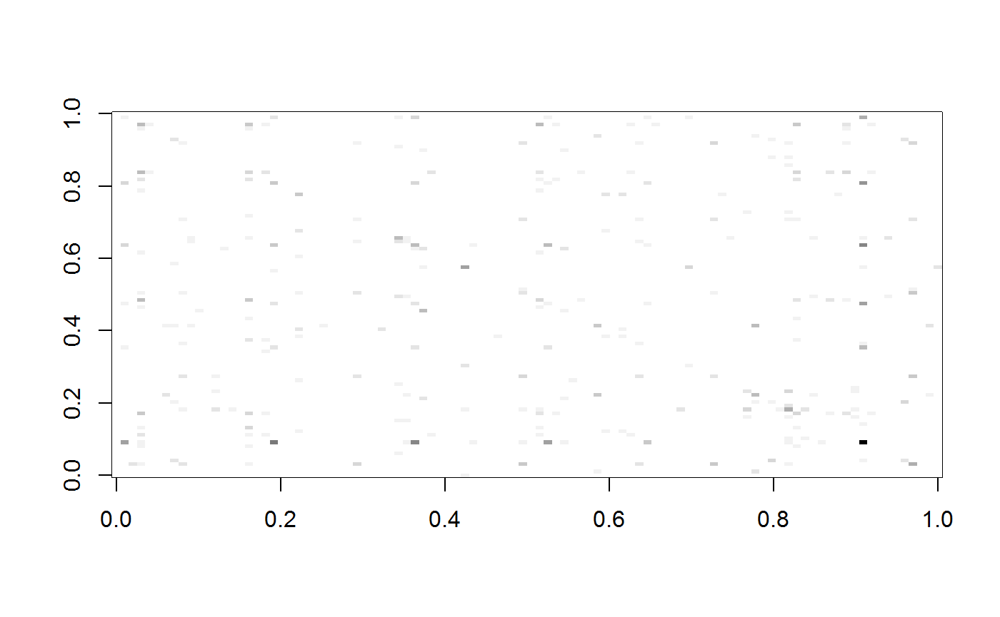
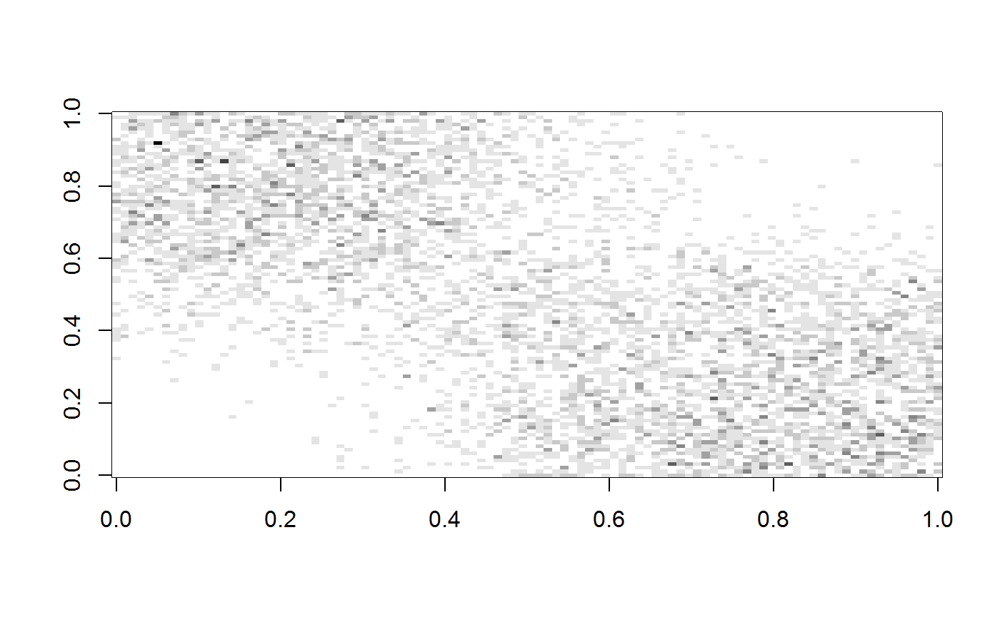
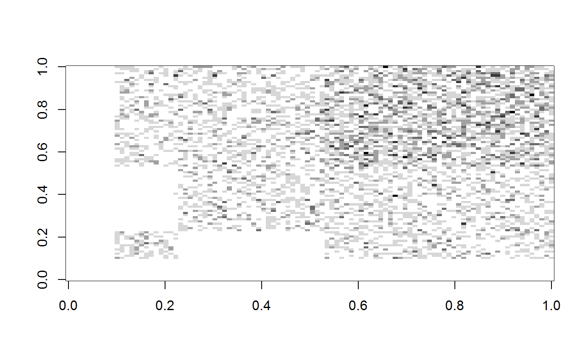
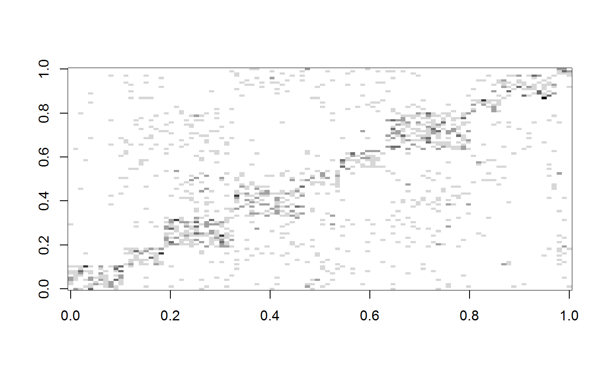
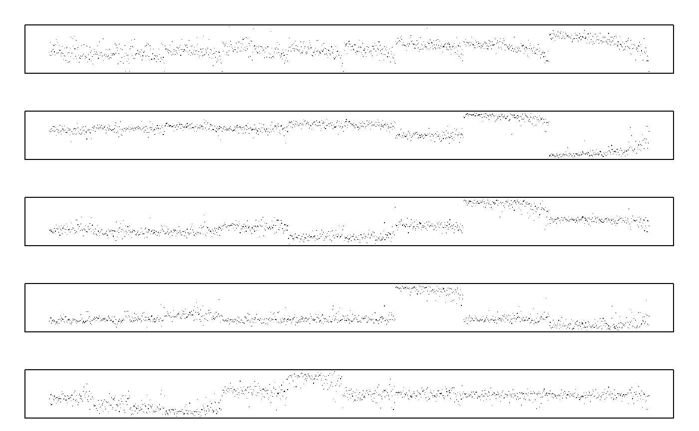
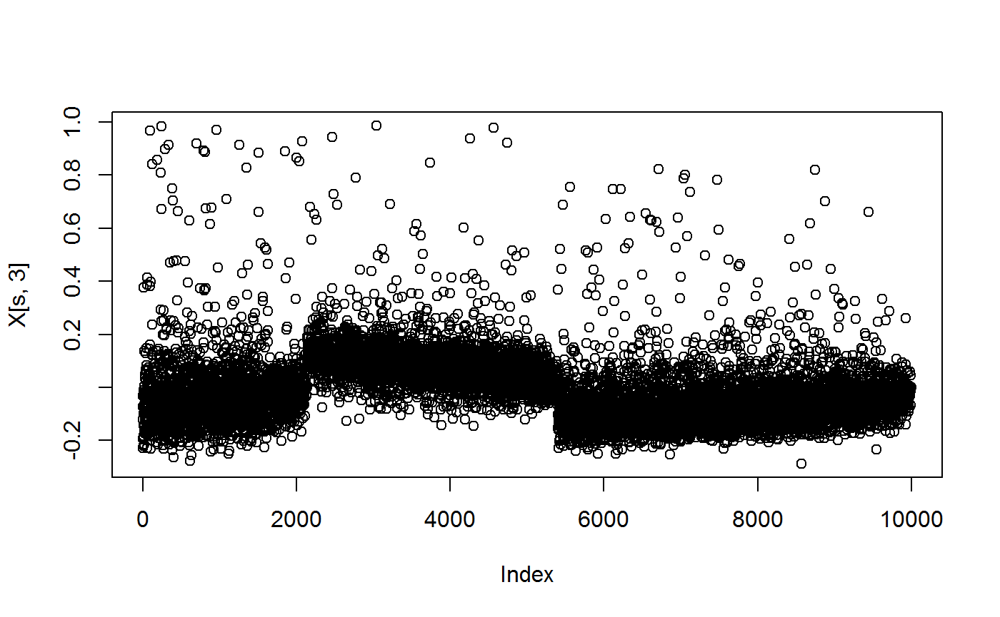

fastRG quickly samples a broad class of network models known as generalized random product graphs. In particular, for matrices \(X\), \(S\) and \(Y\), fastRG samples a matrix \(A\) with expectation \(X S Y^T\) where individual entries are Poisson distributed. We recommend that you think of \(A\) as the adjacency matrix for a graph (or a multi-graph). Crucially, the sampling is \(\mathcal O(m)\), where \(m\) is the number of the edges in graph. Other algorithms are \(\mathcal O(n^2)\), where \(n\) is the number of nodes in the network. For additional details, see the paper.
The easiest way to use fastRG is to use wrapper functions that sample from popular graph models. For example, to sample from an Erdos-Renyi graph n = 1,000,000 nodes and expected degree of five, we can use the erdos_renyi() function.
By default fastRG() returns a Matrix object stored in CSC, which may be binary or integer, and possibly symmetric. We can also ask for the graph as an edgelist. This results in a fast way to create igraph objects using igraph::graph_from_edgelist().
el <- erdos_renyi(n = 1000, avg_deg = 5, return_edge_list = TRUE)
head(el)
#> from to
#> [1,] 784 93
#> [2,] 899 626
#> [3,] 822 147
#> [4,] 528 770
#> [5,] 856 550
#> [6,] 500 764g <- igraph::graph_from_edgelist(el)
g
#> IGRAPH bd28a6e D--- 1000 5064 --
#> + edges from bd28a6e:
#> [1] 784-> 93 899->626 822->147 528->770 856->550 500->764 644->181
#> [8] 365->596 399->740 277->338 406->888 965->125 272->971 43->330
#> [15] 926->417 954->700 177->862 131->837 795->372 511->506 941->604
#> [22] 588->655 957->908 608->747 468-> 77 252->338 715->172 177->974
#> [29] 421->177 248->506 415->731 572->635 541->454 426->817 515->844
#> [36] 317->286 144->982 100->491 253->481 837->244 480->752 564-> 13
#> [43] 961-> 85 938->514 835->987 227->301 430->843 488->950 584->298
#> [50] 780->353 974->451 252->486 360->395 332->638 75-> 66 252->146
#> [57] 933->719 898->307 898->477 360->760 217->797 614-> 56 851->356
#> + ... omitted several edgesfastRG() allows for simulating from graph with E(A) = X S Y^T, where A and S could be rectangular. This is helpful for bipartite graphs or matrices of graph features.
avg_deg: Set the average degree of the graph by scaling sampling probabilities. We strongly, strongly recommend that you always set this option. If you do not, it is easy accidentally sample from large and dense graphs.
directed: Either TRUE or FALSE depending on whether you would like a direct or undirected graph.
poisson_edges: Either TRUE or FALSE depending on whether you would like a Bernoulli graph or a Poisson multi-graph. Scaling via avg_deg always assumes a Poisson multi-graph.
allow_self_edges: Whether nodes should be allowed to connect to themselves. Either TRUE or FALSE.
WARNING: content below here is rough!
K <- 10
n <- 500
pi <- rexp(K) + 1
pi <- pi / sum(pi) * 3
B <- matrix(rexp(K^2) + 1, nrow = K)
diag(B) <- diag(B) + mean(B) * K
theta <- rexp(n)
A <- dcsbm(theta, pi, B, avg_deg = 50)
mean(rowSums(A)) # average degree
#> [1] 49.852If we remove multiple edges, the avg_deg parameter is not trustworthy:
but it is a good upper bound when the graph is sparse:
n <- 10000
A <- dcsbm(rexp(n), pi, B, avg_deg = 50, poisson_edges = FALSE)
mean(rowSums(A))
#> [1] 48.8003This draws a 100 x 100 adjacency matrix from each model. Each image might take around 5 seconds to render.
# helper to plot adjacency matrices
plot_matrix <- function(A) {
image(as.matrix(A), col = grey(seq(1, 0, len = 20)))
}K <- 10
n <- 100
pi <- rexp(K) + 1
pi <- pi / sum(pi) * 3
B <- matrix(rexp(K^2) + 1, nrow = K)
diag(B) <- diag(B) + mean(B) * K
theta <- rexp(n)
A <- dcsbm(theta, pi, B, avg_deg = 50)
plot_matrix(A[, n:1])
K <- 2
n <- 100
alpha <- c(1, 1) / 5
B <- diag(c(1, 1))
theta <- n
A <- dc_mixed(theta, alpha, B, avg_deg = 50, sort_nodes = TRUE)
plot_matrix(A[, theta:1] / max(A))
n <- 100
K <- 2
pi <- c(.7, .7)
B <- diag(c(1, 1))
theta <- n
A <- dc_overlapping(theta, pi, B, avg_deg = 50, sort_nodes = TRUE)
plot_matrix(t(A[, 1:n] / max(A)))
K <- 10
n <- 100
pi <- rexp(K) + 1
pi <- pi / sum(pi)
B <- matrix(rexp(K^2), nrow = K)
B <- B / (3 * max(B))
diag(B) <- diag(B) + mean(B) * K
A <- fastRG::sbm(n, pi, B, sort_nodes = TRUE)
plot_matrix(A)
Next sample a DC-SBM with 10,000 nodes. Then compute and plot the leading eigenspace.
library(RSpectra)
K <- 10
n <- 10000
pi <- rexp(K) + 1
pi <- pi / sum(pi)
pi <- -sort(-pi)
B <- matrix(rexp(K^2) + 1, nrow = K)
diag(B) <- diag(B) + mean(B) * K
A <- dcsbm(rgamma(n, shape = 2, scale = .4), pi, B, avg_deg = 20, simple = TRUE)
mean(rowSums(A))
#> [1] 19.8851K <- 10
n <- 10000
pi <- rexp(K) + 1
pi <- pi / sum(pi)
pi <- -sort(-pi)
B <- matrix(rexp(K^2) + 1, nrow = K)
diag(B) <- diag(B) + mean(B) * K
A <- dcsbm(rgamma(n, shape = 2, scale = .4), pi, B, avg_deg = 20, simple = TRUE, sort_nodes = TRUE)
mean(rowSums(A))
#> [1] 19.8144# leading eigen of regularized Laplacian with tau = 1
D <- Diagonal(n, 1 / sqrt(rowSums(A) + 1))
ei <- eigs_sym(D %*% A %*% D, 10)
# normalize the rows of X:
X <- t(apply(ei$vectors[, 1:K], 1, function(x) return(x / sqrt(sum(x^2) + 1 / n))))
par(mfrow = c(5, 1), mar = c(1, 2, 2, 2), xaxt = "n", yaxt = "n")
# plot 1000 elements of the leading eigenvectors:
s <- sort(sample(n, 1000))
for (i in 1:5) {
plot(X[s, i], pch = ".")
}
or
# This samples a 1M node graph.
# Depending on the computer, sampling the graph should take between 10 and 30 seconds
# Then, taking the eigendecomposition of the regularized graph laplacian should take between 1 and 3 minutes
# The resulting adjacency matrix is a bit larger than 100MB.
# The leading eigenvectors of A are highly localized
K <- 3
n <- 1000000
pi <- rexp(K) + 1
pi <- pi / sum(pi)
pi <- -sort(-pi)
B <- matrix(rexp(K^2) + 1, nrow = K)
diag(B) <- diag(B) + mean(B) * K
A <- dcsbm(rgamma(n, shape = 2, scale = .4), pi, B, avg_deg = 10, sort_nodes = TRUE)
D <- Diagonal(n, 1 / sqrt(rowSums(A) + 10))
L <- D %*% A %*% D
ei <- eigs_sym(L, 4)s <- sort(sample(n, 10000))
X <- t(apply(ei$vectors[, 1:K], 1, function(x) return(x / sqrt(sum(x^2) + 1 / n))))
plot(X[s, 3]) # highly localized eigenvectors
To sample from a degree corrected and node contextualized graph…
n <- 10000 # number of nodes
d <- 1000 # number of features
K <- 5 # number of blocks
# Here are the parameters for the graph:
pi <- rexp(K) + 1
pi <- pi / sum(pi) * 3
B <- matrix(rexp(K^2) + 1, nrow = K)
diag(B) <- diag(B) + mean(B) * K
theta <- rexp(n)
paraG <- dcsbm_params(theta = theta, pi = pi, B = B)# Here are the parameters for the features:
thetaY <- rexp(d)
piFeatures <- rexp(K) + 1
piFeatures <- piFeatures / sum(piFeatures) * 3
BFeatures <- matrix(rexp(K^2) + 1, nrow = K)
diag(BFeatures) <- diag(BFeatures) + mean(BFeatures) * K
paraFeat <- dcsbm_params(theta = thetaY, pi = piFeatures, B = BFeatures)# the node "degrees" in the features, should be related to their degrees in the graph.
X <- paraG$X
X@x <- paraG$X@x + rexp(n) # the degree parameter should be different. X@x + rexp(n) makes feature degrees correlated to degrees in graph.
# generate the graph and features
A <- fastRG(paraG$X, paraG$S, avg_deg = 10)
features <- fastRG(X, paraFeat$S, paraFeat$X, avg_deg = 20)